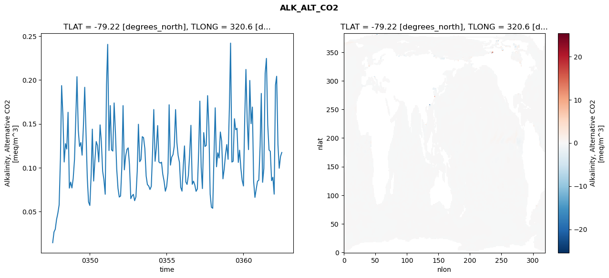
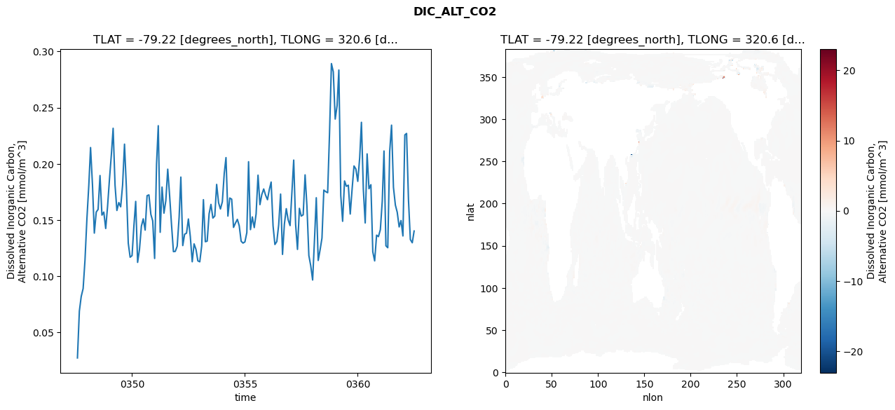
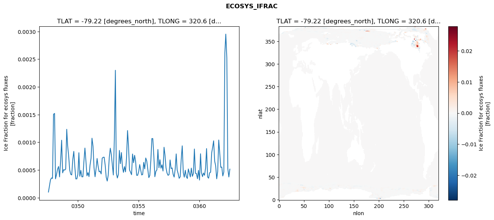
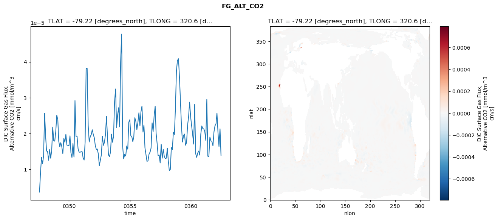

glb-dor_North_Atlantic_basin_023_1999-07-01_00094#
Simulation details#
Case: smyle.cdr-atlas-v0.glb-dor_North_Atlantic_basin_023_1999-07-01_00094.001
Basin: North_Atlantic_basin
Polygon: 23.0
Start date: 1999-07
Show code cell source Hide code cell source
import xarray as xr
import matplotlib.pyplot as plt
Show code cell source Hide code cell source
zarr_store = "/path/to/zarr/store"
# Parameters
zarr_store = "/global/cfs/projectdirs/m4746/Projects/Ocean-CDR-Atlas-v0/data/validation/smyle.cdr-atlas-v0.glb-dor_North_Atlantic_basin_023_1999-07-01_00094.001.validation.zarr"
Show code cell source Hide code cell source
%%time
ds_o = xr.open_zarr(zarr_store).compute()
ds_o
CPU times: user 673 ms, sys: 403 ms, total: 1.08 s
Wall time: 1.36 s
<xarray.Dataset> Size: 2MB
Dimensions: (nlat: 384, nlon: 320, time: 180)
Coordinates:
TLAT float64 8B -79.22
TLONG float64 8B 320.6
ULAT float64 8B -78.95
ULONG float64 8B 321.1
* time (time) object 1kB 0347-08-01 00:00:00 ... 0362-07-01 0...
z_t float32 4B 500.0
Dimensions without coordinates: nlat, nlon
Data variables:
ALK_ALT_CO2_diff (nlat, nlon) float32 492kB nan nan nan ... nan nan nan
ALK_ALT_CO2_rmse (time) float64 1kB 0.01442 0.02666 ... 0.1128 0.1173
DIC_ALT_CO2_diff (nlat, nlon) float32 492kB nan nan nan ... nan nan nan
DIC_ALT_CO2_rmse (time) float64 1kB 0.02732 0.06898 ... 0.1298 0.1403
ECOSYS_IFRAC_diff (nlat, nlon) float32 492kB nan nan nan ... nan nan nan
ECOSYS_IFRAC_rmse (time) float64 1kB 0.0001022 0.000212 ... 0.0005166
FG_ALT_CO2_diff (nlat, nlon) float32 492kB nan nan nan ... nan nan nan
FG_ALT_CO2_rmse (time) float64 1kB 3.641e-06 9.299e-06 ... 1.383e-05xarray.Dataset
- nlat: 384
- nlon: 320
- time: 180
- TLAT()float64-79.22
- long_name :
- array of t-grid latitudes
- units :
- degrees_north
array(-79.22052261)
- TLONG()float64320.6
- long_name :
- array of t-grid longitudes
- units :
- degrees_east
array(320.56250892)
- ULAT()float64-78.95
- long_name :
- array of u-grid latitudes
- units :
- degrees_north
array(-78.95289509)
- ULONG()float64321.1
- long_name :
- array of u-grid longitudes
- units :
- degrees_east
array(321.12500894)
- time(time)object0347-08-01 00:00:00 ... 0362-07-...
- bounds :
- time_bound
- long_name :
- time
array([cftime.DatetimeNoLeap(347, 8, 1, 0, 0, 0, 0, has_year_zero=True), cftime.DatetimeNoLeap(347, 9, 1, 0, 0, 0, 0, has_year_zero=True), cftime.DatetimeNoLeap(347, 10, 1, 0, 0, 0, 0, has_year_zero=True), cftime.DatetimeNoLeap(347, 11, 1, 0, 0, 0, 0, has_year_zero=True), cftime.DatetimeNoLeap(347, 12, 1, 0, 0, 0, 0, has_year_zero=True), cftime.DatetimeNoLeap(348, 1, 1, 0, 0, 0, 0, has_year_zero=True), cftime.DatetimeNoLeap(348, 2, 1, 0, 0, 0, 0, has_year_zero=True), cftime.DatetimeNoLeap(348, 3, 1, 0, 0, 0, 0, has_year_zero=True), cftime.DatetimeNoLeap(348, 4, 1, 0, 0, 0, 0, has_year_zero=True), cftime.DatetimeNoLeap(348, 5, 1, 0, 0, 0, 0, has_year_zero=True), cftime.DatetimeNoLeap(348, 6, 1, 0, 0, 0, 0, has_year_zero=True), cftime.DatetimeNoLeap(348, 7, 1, 0, 0, 0, 0, has_year_zero=True), cftime.DatetimeNoLeap(348, 8, 1, 0, 0, 0, 0, has_year_zero=True), cftime.DatetimeNoLeap(348, 9, 1, 0, 0, 0, 0, has_year_zero=True), cftime.DatetimeNoLeap(348, 10, 1, 0, 0, 0, 0, has_year_zero=True), cftime.DatetimeNoLeap(348, 11, 1, 0, 0, 0, 0, has_year_zero=True), cftime.DatetimeNoLeap(348, 12, 1, 0, 0, 0, 0, has_year_zero=True), cftime.DatetimeNoLeap(349, 1, 1, 0, 0, 0, 0, has_year_zero=True), cftime.DatetimeNoLeap(349, 2, 1, 0, 0, 0, 0, has_year_zero=True), cftime.DatetimeNoLeap(349, 3, 1, 0, 0, 0, 0, has_year_zero=True), cftime.DatetimeNoLeap(349, 4, 1, 0, 0, 0, 0, has_year_zero=True), cftime.DatetimeNoLeap(349, 5, 1, 0, 0, 0, 0, has_year_zero=True), cftime.DatetimeNoLeap(349, 6, 1, 0, 0, 0, 0, has_year_zero=True), cftime.DatetimeNoLeap(349, 7, 1, 0, 0, 0, 0, has_year_zero=True), cftime.DatetimeNoLeap(349, 8, 1, 0, 0, 0, 0, has_year_zero=True), cftime.DatetimeNoLeap(349, 9, 1, 0, 0, 0, 0, has_year_zero=True), cftime.DatetimeNoLeap(349, 10, 1, 0, 0, 0, 0, has_year_zero=True), cftime.DatetimeNoLeap(349, 11, 1, 0, 0, 0, 0, has_year_zero=True), cftime.DatetimeNoLeap(349, 12, 1, 0, 0, 0, 0, has_year_zero=True), cftime.DatetimeNoLeap(350, 1, 1, 0, 0, 0, 0, has_year_zero=True), cftime.DatetimeNoLeap(350, 2, 1, 0, 0, 0, 0, has_year_zero=True), cftime.DatetimeNoLeap(350, 3, 1, 0, 0, 0, 0, has_year_zero=True), cftime.DatetimeNoLeap(350, 4, 1, 0, 0, 0, 0, has_year_zero=True), cftime.DatetimeNoLeap(350, 5, 1, 0, 0, 0, 0, has_year_zero=True), cftime.DatetimeNoLeap(350, 6, 1, 0, 0, 0, 0, has_year_zero=True), cftime.DatetimeNoLeap(350, 7, 1, 0, 0, 0, 0, has_year_zero=True), cftime.DatetimeNoLeap(350, 8, 1, 0, 0, 0, 0, has_year_zero=True), cftime.DatetimeNoLeap(350, 9, 1, 0, 0, 0, 0, has_year_zero=True), cftime.DatetimeNoLeap(350, 10, 1, 0, 0, 0, 0, has_year_zero=True), cftime.DatetimeNoLeap(350, 11, 1, 0, 0, 0, 0, has_year_zero=True), cftime.DatetimeNoLeap(350, 12, 1, 0, 0, 0, 0, has_year_zero=True), cftime.DatetimeNoLeap(351, 1, 1, 0, 0, 0, 0, has_year_zero=True), cftime.DatetimeNoLeap(351, 2, 1, 0, 0, 0, 0, has_year_zero=True), cftime.DatetimeNoLeap(351, 3, 1, 0, 0, 0, 0, has_year_zero=True), cftime.DatetimeNoLeap(351, 4, 1, 0, 0, 0, 0, has_year_zero=True), cftime.DatetimeNoLeap(351, 5, 1, 0, 0, 0, 0, has_year_zero=True), cftime.DatetimeNoLeap(351, 6, 1, 0, 0, 0, 0, has_year_zero=True), cftime.DatetimeNoLeap(351, 7, 1, 0, 0, 0, 0, has_year_zero=True), cftime.DatetimeNoLeap(351, 8, 1, 0, 0, 0, 0, has_year_zero=True), cftime.DatetimeNoLeap(351, 9, 1, 0, 0, 0, 0, has_year_zero=True), cftime.DatetimeNoLeap(351, 10, 1, 0, 0, 0, 0, has_year_zero=True), cftime.DatetimeNoLeap(351, 11, 1, 0, 0, 0, 0, has_year_zero=True), cftime.DatetimeNoLeap(351, 12, 1, 0, 0, 0, 0, has_year_zero=True), cftime.DatetimeNoLeap(352, 1, 1, 0, 0, 0, 0, has_year_zero=True), cftime.DatetimeNoLeap(352, 2, 1, 0, 0, 0, 0, has_year_zero=True), cftime.DatetimeNoLeap(352, 3, 1, 0, 0, 0, 0, has_year_zero=True), cftime.DatetimeNoLeap(352, 4, 1, 0, 0, 0, 0, has_year_zero=True), cftime.DatetimeNoLeap(352, 5, 1, 0, 0, 0, 0, has_year_zero=True), cftime.DatetimeNoLeap(352, 6, 1, 0, 0, 0, 0, has_year_zero=True), cftime.DatetimeNoLeap(352, 7, 1, 0, 0, 0, 0, has_year_zero=True), cftime.DatetimeNoLeap(352, 8, 1, 0, 0, 0, 0, has_year_zero=True), cftime.DatetimeNoLeap(352, 9, 1, 0, 0, 0, 0, has_year_zero=True), cftime.DatetimeNoLeap(352, 10, 1, 0, 0, 0, 0, has_year_zero=True), cftime.DatetimeNoLeap(352, 11, 1, 0, 0, 0, 0, has_year_zero=True), cftime.DatetimeNoLeap(352, 12, 1, 0, 0, 0, 0, has_year_zero=True), cftime.DatetimeNoLeap(353, 1, 1, 0, 0, 0, 0, has_year_zero=True), cftime.DatetimeNoLeap(353, 2, 1, 0, 0, 0, 0, has_year_zero=True), cftime.DatetimeNoLeap(353, 3, 1, 0, 0, 0, 0, has_year_zero=True), cftime.DatetimeNoLeap(353, 4, 1, 0, 0, 0, 0, has_year_zero=True), cftime.DatetimeNoLeap(353, 5, 1, 0, 0, 0, 0, has_year_zero=True), cftime.DatetimeNoLeap(353, 6, 1, 0, 0, 0, 0, has_year_zero=True), cftime.DatetimeNoLeap(353, 7, 1, 0, 0, 0, 0, has_year_zero=True), cftime.DatetimeNoLeap(353, 8, 1, 0, 0, 0, 0, has_year_zero=True), cftime.DatetimeNoLeap(353, 9, 1, 0, 0, 0, 0, has_year_zero=True), cftime.DatetimeNoLeap(353, 10, 1, 0, 0, 0, 0, has_year_zero=True), cftime.DatetimeNoLeap(353, 11, 1, 0, 0, 0, 0, has_year_zero=True), cftime.DatetimeNoLeap(353, 12, 1, 0, 0, 0, 0, has_year_zero=True), cftime.DatetimeNoLeap(354, 1, 1, 0, 0, 0, 0, has_year_zero=True), cftime.DatetimeNoLeap(354, 2, 1, 0, 0, 0, 0, has_year_zero=True), cftime.DatetimeNoLeap(354, 3, 1, 0, 0, 0, 0, has_year_zero=True), cftime.DatetimeNoLeap(354, 4, 1, 0, 0, 0, 0, has_year_zero=True), cftime.DatetimeNoLeap(354, 5, 1, 0, 0, 0, 0, has_year_zero=True), cftime.DatetimeNoLeap(354, 6, 1, 0, 0, 0, 0, has_year_zero=True), cftime.DatetimeNoLeap(354, 7, 1, 0, 0, 0, 0, has_year_zero=True), cftime.DatetimeNoLeap(354, 8, 1, 0, 0, 0, 0, has_year_zero=True), cftime.DatetimeNoLeap(354, 9, 1, 0, 0, 0, 0, has_year_zero=True), cftime.DatetimeNoLeap(354, 10, 1, 0, 0, 0, 0, has_year_zero=True), cftime.DatetimeNoLeap(354, 11, 1, 0, 0, 0, 0, has_year_zero=True), cftime.DatetimeNoLeap(354, 12, 1, 0, 0, 0, 0, has_year_zero=True), cftime.DatetimeNoLeap(355, 1, 1, 0, 0, 0, 0, has_year_zero=True), cftime.DatetimeNoLeap(355, 2, 1, 0, 0, 0, 0, has_year_zero=True), cftime.DatetimeNoLeap(355, 3, 1, 0, 0, 0, 0, has_year_zero=True), cftime.DatetimeNoLeap(355, 4, 1, 0, 0, 0, 0, has_year_zero=True), cftime.DatetimeNoLeap(355, 5, 1, 0, 0, 0, 0, has_year_zero=True), cftime.DatetimeNoLeap(355, 6, 1, 0, 0, 0, 0, has_year_zero=True), cftime.DatetimeNoLeap(355, 7, 1, 0, 0, 0, 0, has_year_zero=True), cftime.DatetimeNoLeap(355, 8, 1, 0, 0, 0, 0, has_year_zero=True), cftime.DatetimeNoLeap(355, 9, 1, 0, 0, 0, 0, has_year_zero=True), cftime.DatetimeNoLeap(355, 10, 1, 0, 0, 0, 0, has_year_zero=True), cftime.DatetimeNoLeap(355, 11, 1, 0, 0, 0, 0, has_year_zero=True), cftime.DatetimeNoLeap(355, 12, 1, 0, 0, 0, 0, has_year_zero=True), cftime.DatetimeNoLeap(356, 1, 1, 0, 0, 0, 0, has_year_zero=True), cftime.DatetimeNoLeap(356, 2, 1, 0, 0, 0, 0, has_year_zero=True), cftime.DatetimeNoLeap(356, 3, 1, 0, 0, 0, 0, has_year_zero=True), cftime.DatetimeNoLeap(356, 4, 1, 0, 0, 0, 0, has_year_zero=True), cftime.DatetimeNoLeap(356, 5, 1, 0, 0, 0, 0, has_year_zero=True), cftime.DatetimeNoLeap(356, 6, 1, 0, 0, 0, 0, has_year_zero=True), cftime.DatetimeNoLeap(356, 7, 1, 0, 0, 0, 0, has_year_zero=True), cftime.DatetimeNoLeap(356, 8, 1, 0, 0, 0, 0, has_year_zero=True), cftime.DatetimeNoLeap(356, 9, 1, 0, 0, 0, 0, has_year_zero=True), cftime.DatetimeNoLeap(356, 10, 1, 0, 0, 0, 0, has_year_zero=True), cftime.DatetimeNoLeap(356, 11, 1, 0, 0, 0, 0, has_year_zero=True), cftime.DatetimeNoLeap(356, 12, 1, 0, 0, 0, 0, has_year_zero=True), cftime.DatetimeNoLeap(357, 1, 1, 0, 0, 0, 0, has_year_zero=True), cftime.DatetimeNoLeap(357, 2, 1, 0, 0, 0, 0, has_year_zero=True), cftime.DatetimeNoLeap(357, 3, 1, 0, 0, 0, 0, has_year_zero=True), cftime.DatetimeNoLeap(357, 4, 1, 0, 0, 0, 0, has_year_zero=True), cftime.DatetimeNoLeap(357, 5, 1, 0, 0, 0, 0, has_year_zero=True), cftime.DatetimeNoLeap(357, 6, 1, 0, 0, 0, 0, has_year_zero=True), cftime.DatetimeNoLeap(357, 7, 1, 0, 0, 0, 0, has_year_zero=True), cftime.DatetimeNoLeap(357, 8, 1, 0, 0, 0, 0, has_year_zero=True), cftime.DatetimeNoLeap(357, 9, 1, 0, 0, 0, 0, has_year_zero=True), cftime.DatetimeNoLeap(357, 10, 1, 0, 0, 0, 0, has_year_zero=True), cftime.DatetimeNoLeap(357, 11, 1, 0, 0, 0, 0, has_year_zero=True), cftime.DatetimeNoLeap(357, 12, 1, 0, 0, 0, 0, has_year_zero=True), cftime.DatetimeNoLeap(358, 1, 1, 0, 0, 0, 0, has_year_zero=True), cftime.DatetimeNoLeap(358, 2, 1, 0, 0, 0, 0, has_year_zero=True), cftime.DatetimeNoLeap(358, 3, 1, 0, 0, 0, 0, has_year_zero=True), cftime.DatetimeNoLeap(358, 4, 1, 0, 0, 0, 0, has_year_zero=True), cftime.DatetimeNoLeap(358, 5, 1, 0, 0, 0, 0, has_year_zero=True), cftime.DatetimeNoLeap(358, 6, 1, 0, 0, 0, 0, has_year_zero=True), cftime.DatetimeNoLeap(358, 7, 1, 0, 0, 0, 0, has_year_zero=True), cftime.DatetimeNoLeap(358, 8, 1, 0, 0, 0, 0, has_year_zero=True), cftime.DatetimeNoLeap(358, 9, 1, 0, 0, 0, 0, has_year_zero=True), cftime.DatetimeNoLeap(358, 10, 1, 0, 0, 0, 0, has_year_zero=True), cftime.DatetimeNoLeap(358, 11, 1, 0, 0, 0, 0, has_year_zero=True), cftime.DatetimeNoLeap(358, 12, 1, 0, 0, 0, 0, has_year_zero=True), cftime.DatetimeNoLeap(359, 1, 1, 0, 0, 0, 0, has_year_zero=True), cftime.DatetimeNoLeap(359, 2, 1, 0, 0, 0, 0, has_year_zero=True), cftime.DatetimeNoLeap(359, 3, 1, 0, 0, 0, 0, has_year_zero=True), cftime.DatetimeNoLeap(359, 4, 1, 0, 0, 0, 0, has_year_zero=True), cftime.DatetimeNoLeap(359, 5, 1, 0, 0, 0, 0, has_year_zero=True), cftime.DatetimeNoLeap(359, 6, 1, 0, 0, 0, 0, has_year_zero=True), cftime.DatetimeNoLeap(359, 7, 1, 0, 0, 0, 0, has_year_zero=True), cftime.DatetimeNoLeap(359, 8, 1, 0, 0, 0, 0, has_year_zero=True), cftime.DatetimeNoLeap(359, 9, 1, 0, 0, 0, 0, has_year_zero=True), cftime.DatetimeNoLeap(359, 10, 1, 0, 0, 0, 0, has_year_zero=True), cftime.DatetimeNoLeap(359, 11, 1, 0, 0, 0, 0, has_year_zero=True), cftime.DatetimeNoLeap(359, 12, 1, 0, 0, 0, 0, has_year_zero=True), cftime.DatetimeNoLeap(360, 1, 1, 0, 0, 0, 0, has_year_zero=True), cftime.DatetimeNoLeap(360, 2, 1, 0, 0, 0, 0, has_year_zero=True), cftime.DatetimeNoLeap(360, 3, 1, 0, 0, 0, 0, has_year_zero=True), cftime.DatetimeNoLeap(360, 4, 1, 0, 0, 0, 0, has_year_zero=True), cftime.DatetimeNoLeap(360, 5, 1, 0, 0, 0, 0, has_year_zero=True), cftime.DatetimeNoLeap(360, 6, 1, 0, 0, 0, 0, has_year_zero=True), cftime.DatetimeNoLeap(360, 7, 1, 0, 0, 0, 0, has_year_zero=True), cftime.DatetimeNoLeap(360, 8, 1, 0, 0, 0, 0, has_year_zero=True), cftime.DatetimeNoLeap(360, 9, 1, 0, 0, 0, 0, has_year_zero=True), cftime.DatetimeNoLeap(360, 10, 1, 0, 0, 0, 0, has_year_zero=True), cftime.DatetimeNoLeap(360, 11, 1, 0, 0, 0, 0, has_year_zero=True), cftime.DatetimeNoLeap(360, 12, 1, 0, 0, 0, 0, has_year_zero=True), cftime.DatetimeNoLeap(361, 1, 1, 0, 0, 0, 0, has_year_zero=True), cftime.DatetimeNoLeap(361, 2, 1, 0, 0, 0, 0, has_year_zero=True), cftime.DatetimeNoLeap(361, 3, 1, 0, 0, 0, 0, has_year_zero=True), cftime.DatetimeNoLeap(361, 4, 1, 0, 0, 0, 0, has_year_zero=True), cftime.DatetimeNoLeap(361, 5, 1, 0, 0, 0, 0, has_year_zero=True), cftime.DatetimeNoLeap(361, 6, 1, 0, 0, 0, 0, has_year_zero=True), cftime.DatetimeNoLeap(361, 7, 1, 0, 0, 0, 0, has_year_zero=True), cftime.DatetimeNoLeap(361, 8, 1, 0, 0, 0, 0, has_year_zero=True), cftime.DatetimeNoLeap(361, 9, 1, 0, 0, 0, 0, has_year_zero=True), cftime.DatetimeNoLeap(361, 10, 1, 0, 0, 0, 0, has_year_zero=True), cftime.DatetimeNoLeap(361, 11, 1, 0, 0, 0, 0, has_year_zero=True), cftime.DatetimeNoLeap(361, 12, 1, 0, 0, 0, 0, has_year_zero=True), cftime.DatetimeNoLeap(362, 1, 1, 0, 0, 0, 0, has_year_zero=True), cftime.DatetimeNoLeap(362, 2, 1, 0, 0, 0, 0, has_year_zero=True), cftime.DatetimeNoLeap(362, 3, 1, 0, 0, 0, 0, has_year_zero=True), cftime.DatetimeNoLeap(362, 4, 1, 0, 0, 0, 0, has_year_zero=True), cftime.DatetimeNoLeap(362, 5, 1, 0, 0, 0, 0, has_year_zero=True), cftime.DatetimeNoLeap(362, 6, 1, 0, 0, 0, 0, has_year_zero=True), cftime.DatetimeNoLeap(362, 7, 1, 0, 0, 0, 0, has_year_zero=True)], dtype=object) - z_t()float32500.0
- long_name :
- depth from surface to midpoint of layer
- positive :
- down
- units :
- centimeters
- valid_max :
- 537500.0
- valid_min :
- 500.0
array(500., dtype=float32)
- ALK_ALT_CO2_diff(nlat, nlon)float32nan nan nan nan ... nan nan nan nan
- cell_methods :
- time: mean
- grid_loc :
- 3111
- long_name :
- Alkalinity, Alternative CO2
- units :
- meq/m^3
array([[ nan, nan, nan, ..., nan, nan, nan], [ nan, nan, nan, ..., nan, nan, nan], [0.00537109, 0.00244141, 0.01245117, ..., nan, nan, nan], ..., [ nan, nan, nan, ..., nan, nan, nan], [ nan, nan, nan, ..., nan, nan, nan], [ nan, nan, nan, ..., nan, nan, nan]], dtype=float32) - ALK_ALT_CO2_rmse(time)float640.01442 0.02666 ... 0.1128 0.1173
- cell_methods :
- time: mean
- grid_loc :
- 3111
- long_name :
- Alkalinity, Alternative CO2
- units :
- meq/m^3
array([0.01441803, 0.02665748, 0.0297776 , 0.04100357, 0.04785608, 0.05746192, 0.11124766, 0.19359729, 0.15926751, 0.1064853 , 0.12741285, 0.12122139, 0.16316716, 0.07667707, 0.08351274, 0.07684429, 0.08768628, 0.10920747, 0.15683065, 0.20377865, 0.14288602, 0.12419702, 0.12865497, 0.11424158, 0.14756411, 0.19166947, 0.14142016, 0.08847337, 0.06092147, 0.05689878, 0.09202593, 0.14392802, 0.08474836, 0.10818378, 0.12982075, 0.12524983, 0.10658889, 0.14878787, 0.12996637, 0.09594304, 0.0862225 , 0.06967087, 0.19418906, 0.24063851, 0.1195557 , 0.17082508, 0.12032362, 0.11895771, 0.17383034, 0.13986111, 0.09865515, 0.07636444, 0.06650561, 0.06765346, 0.1023216 , 0.17078021, 0.09752989, 0.11314347, 0.12081139, 0.12255715, 0.10288879, 0.06465412, 0.06785479, 0.06956376, 0.06236643, 0.06674551, 0.0961664 , 0.14949721, 0.10676864, 0.10926675, 0.13536049, 0.13417133, 0.12175717, 0.09040523, 0.08068132, 0.07907151, 0.07512278, 0.07866041, 0.11888929, 0.16631021, 0.10727821, 0.12257832, 0.14802093, 0.10651971, 0.10521992, 0.10621583, 0.09247326, 0.08461406, 0.07315535, 0.07847102, 0.09374156, 0.17174959, 0.10289401, 0.11195833, 0.11482509, 0.12465234, 0.16624685, 0.12863914, 0.11382632, 0.10604578, 0.0776083 , 0.07321579, 0.10252893, 0.1247869 , 0.08375835, 0.08089069, 0.0910793 , 0.11483356, 0.14832477, 0.0810105 , 0.0846143 , 0.08026219, 0.07301591, 0.07582824, 0.11903971, 0.1758939 , 0.1008871 , 0.07613784, 0.13996909, 0.12418244, 0.12543174, 0.18214716, 0.14644621, 0.06973548, 0.05481004, 0.05370978, 0.11559251, 0.16826781, 0.10102677, 0.11693478, 0.11107283, 0.14066721, 0.13011381, 0.08728629, 0.09856784, 0.11523842, 0.12634862, 0.1095707 , 0.16864998, 0.24205445, 0.10640835, 0.10732286, 0.15580809, 0.14324237, 0.14489094, 0.10600279, 0.11993433, 0.09916965, 0.08563039, 0.07911035, 0.15689235, 0.2120117 , 0.15264759, 0.12057957, 0.19946311, 0.15014499, 0.16913827, 0.08385216, 0.06611456, 0.07576655, 0.08454661, 0.08573283, 0.12479594, 0.18466421, 0.08328271, 0.09902451, 0.20758973, 0.2246241 , 0.14920866, 0.12020932, 0.11868967, 0.08514395, 0.08905529, 0.06977659, 0.19435134, 0.20422666, 0.12632503, 0.09935447, 0.11277477, 0.11731741]) - DIC_ALT_CO2_diff(nlat, nlon)float32nan nan nan nan ... nan nan nan nan
- cell_methods :
- time: mean
- grid_loc :
- 3111
- long_name :
- Dissolved Inorganic Carbon, Alternative CO2
- units :
- mmol/m^3
array([[ nan, nan, nan, ..., nan, nan, nan], [ nan, nan, nan, ..., nan, nan, nan], [-0.01196289, -0.01025391, -0.00634766, ..., nan, nan, nan], ..., [ nan, nan, nan, ..., nan, nan, nan], [ nan, nan, nan, ..., nan, nan, nan], [ nan, nan, nan, ..., nan, nan, nan]], dtype=float32) - DIC_ALT_CO2_rmse(time)float640.02732 0.06898 ... 0.1298 0.1403
- cell_methods :
- time: mean
- grid_loc :
- 3111
- long_name :
- Dissolved Inorganic Carbon, Alternative CO2
- units :
- mmol/m^3
array([0.02732127, 0.06898059, 0.08199953, 0.08905742, 0.11433331, 0.15104574, 0.1811404 , 0.2145343 , 0.18146352, 0.13839903, 0.15714259, 0.15948669, 0.18962923, 0.15441804, 0.15710717, 0.14251684, 0.1620526 , 0.18646326, 0.20861127, 0.23166676, 0.18100587, 0.15855521, 0.16556839, 0.16180237, 0.18108978, 0.21754 , 0.17919166, 0.12937182, 0.11695047, 0.11835929, 0.14555916, 0.16660495, 0.11237105, 0.12377529, 0.14456913, 0.15109457, 0.14108019, 0.17172475, 0.17240911, 0.15512644, 0.1492673 , 0.11582823, 0.19975187, 0.23395011, 0.13912457, 0.17935534, 0.15615363, 0.16719983, 0.19527229, 0.17133235, 0.14607041, 0.12192826, 0.1221301 , 0.12672569, 0.15236856, 0.18823086, 0.12732397, 0.13739504, 0.13836691, 0.15094992, 0.13534491, 0.11291039, 0.12882097, 0.12386917, 0.11372042, 0.11287449, 0.1269997 , 0.16814528, 0.13074521, 0.13127102, 0.15561929, 0.16394031, 0.15179537, 0.1536614 , 0.18172524, 0.16542099, 0.15984513, 0.16625737, 0.19165599, 0.20557919, 0.15354081, 0.16961769, 0.16860145, 0.14348543, 0.14734772, 0.15063968, 0.14493947, 0.13115555, 0.12952214, 0.13056454, 0.13887053, 0.20191953, 0.1415023 , 0.1527765 , 0.14331215, 0.15550071, 0.1899374 , 0.16374393, 0.17267104, 0.17767368, 0.17217862, 0.1681168 , 0.17749881, 0.18381312, 0.14486503, 0.12826057, 0.13091368, 0.14567193, 0.17312563, 0.1194492 , 0.14632098, 0.16014622, 0.15028816, 0.14507167, 0.17509056, 0.20335857, 0.14613171, 0.12390725, 0.16042443, 0.15356203, 0.15467157, 0.19020614, 0.16219082, 0.1184171 , 0.10950975, 0.09668158, 0.13348024, 0.16986004, 0.11406256, 0.12330366, 0.13396901, 0.17665916, 0.17525418, 0.17436976, 0.22691228, 0.28924052, 0.28190801, 0.23986614, 0.25193927, 0.28350902, 0.17188309, 0.14891618, 0.1848155 , 0.18004018, 0.18102515, 0.1553758 , 0.17739672, 0.1981511 , 0.19544364, 0.18445951, 0.20560265, 0.23698714, 0.17732143, 0.14744283, 0.20889342, 0.17788988, 0.18148383, 0.12165224, 0.113683 , 0.13654543, 0.13529402, 0.14145011, 0.16692173, 0.21145954, 0.12709802, 0.12538963, 0.21108073, 0.23445306, 0.17909991, 0.16334141, 0.15693914, 0.14388368, 0.14958996, 0.13586947, 0.22579288, 0.22707159, 0.16785926, 0.13269353, 0.12980591, 0.14027424]) - ECOSYS_IFRAC_diff(nlat, nlon)float32nan nan nan nan ... nan nan nan nan
- cell_methods :
- time: mean
- grid_loc :
- 2110
- long_name :
- Ice Fraction for ecosys fluxes
- units :
- fraction
array([[ nan, nan, nan, ..., nan, nan, nan], [ nan, nan, nan, ..., nan, nan, nan], [2.5689602e-05, 5.9306622e-05, 2.9981136e-05, ..., nan, nan, nan], ..., [ nan, nan, nan, ..., nan, nan, nan], [ nan, nan, nan, ..., nan, nan, nan], [ nan, nan, nan, ..., nan, nan, nan]], dtype=float32) - ECOSYS_IFRAC_rmse(time)float640.0001022 0.000212 ... 0.0005166
- cell_methods :
- time: mean
- grid_loc :
- 2110
- long_name :
- Ice Fraction for ecosys fluxes
- units :
- fraction
array([0.00010219, 0.00021203, 0.00032278, 0.00035762, 0.00034887, 0.00150633, 0.00152198, 0.00034108, 0.00041926, 0.00051338, 0.00056375, 0.00037534, 0.00066097, 0.0010386 , 0.0004487 , 0.00050624, 0.0004985 , 0.00051731, 0.00123548, 0.0009347 , 0.00074574, 0.00049963, 0.00042291, 0.00041158, 0.00068885, 0.00083685, 0.00056313, 0.00033935, 0.00034026, 0.00042284, 0.00081256, 0.00038715, 0.00049356, 0.00037671, 0.00037778, 0.0006497 , 0.00089673, 0.00065458, 0.00039521, 0.0004537 , 0.00038086, 0.00058692, 0.00071379, 0.00107451, 0.00092907, 0.00054239, 0.00037849, 0.0005211 , 0.00070847, 0.00056576, 0.00046886, 0.00047865, 0.00042911, 0.00071392, 0.0007299 , 0.00073197, 0.00058756, 0.00037113, 0.00030062, 0.00040718, 0.00072259, 0.00089395, 0.00078458, 0.00059177, 0.00041014, 0.00106548, 0.00230073, 0.00044626, 0.00035565, 0.00041909, 0.00085397, 0.00061427, 0.0008162 , 0.00055708, 0.00045746, 0.00056206, 0.00046691, 0.00071467, 0.0012129 , 0.00093916, 0.00050101, 0.00046095, 0.0004153 , 0.00078946, 0.00063129, 0.00076544, 0.00065321, 0.00040481, 0.00040465, 0.00047073, 0.00059791, 0.00050419, 0.00041069, 0.0004196 , 0.00063864, 0.00052067, 0.00071764, 0.00066124, 0.00051376, 0.00036288, 0.0004023 , 0.0006734 , 0.00106899, 0.00106732, 0.00074776, 0.00037912, 0.000477 , 0.00050199, 0.00087111, 0.00054009, 0.00068612, 0.00053324, 0.00059392, 0.00048173, 0.00091134, 0.00077167, 0.00053959, 0.00044676, 0.00040445, 0.00041587, 0.00068224, 0.00052712, 0.00053799, 0.00042261, 0.00037261, 0.00051394, 0.00079111, 0.00050415, 0.00043358, 0.00035022, 0.00037893, 0.00068967, 0.00093696, 0.00045553, 0.000371 , 0.00049572, 0.00038138, 0.00034752, 0.00051954, 0.00044994, 0.00037552, 0.00053467, 0.00038614, 0.00043724, 0.00087968, 0.00044078, 0.0004373 , 0.00034331, 0.00049528, 0.00031867, 0.00079364, 0.00045434, 0.00038085, 0.00044615, 0.00040467, 0.0005319 , 0.00088713, 0.00037579, 0.00035226, 0.00045008, 0.00046144, 0.00080867, 0.00091623, 0.0010278 , 0.00066069, 0.00057563, 0.00034159, 0.00047198, 0.00104207, 0.00080199, 0.00054838, 0.00055435, 0.00039267, 0.00046582, 0.0026163 , 0.00295315, 0.00252422, 0.00052138, 0.00037482, 0.00051663]) - FG_ALT_CO2_diff(nlat, nlon)float32nan nan nan nan ... nan nan nan nan
- cell_methods :
- time: mean
- grid_loc :
- 2110
- long_name :
- DIC Surface Gas Flux, Alternative CO2
- units :
- mmol/m^3 cm/s
array([[ nan, nan, nan, ..., nan, nan, nan], [ nan, nan, nan, ..., nan, nan, nan], [-4.1140424e-09, 2.1254891e-09, 4.2434571e-09, ..., nan, nan, nan], ..., [ nan, nan, nan, ..., nan, nan, nan], [ nan, nan, nan, ..., nan, nan, nan], [ nan, nan, nan, ..., nan, nan, nan]], dtype=float32) - FG_ALT_CO2_rmse(time)float643.641e-06 9.299e-06 ... 1.383e-05
- cell_methods :
- time: mean
- grid_loc :
- 2110
- long_name :
- DIC Surface Gas Flux, Alternative CO2
- units :
- mmol/m^3 cm/s
array([3.64111739e-06, 9.29899398e-06, 1.33264586e-05, 1.15814096e-05, 1.37268973e-05, 2.56651604e-05, 1.90811472e-05, 1.51169311e-05, 1.49440018e-05, 1.25106450e-05, 1.55066224e-05, 1.31057684e-05, 1.51920834e-05, 2.18048225e-05, 1.79807613e-05, 1.78639207e-05, 2.05363706e-05, 2.51120051e-05, 2.38243847e-05, 1.78464144e-05, 1.63052051e-05, 1.74541302e-05, 1.63074143e-05, 1.43936538e-05, 1.86589137e-05, 1.75616887e-05, 1.97623557e-05, 1.67588405e-05, 1.67002217e-05, 1.65383558e-05, 1.93564124e-05, 1.46717479e-05, 1.32934748e-05, 1.72262401e-05, 1.34328640e-05, 2.92050934e-05, 1.92082326e-05, 1.92349534e-05, 1.58004654e-05, 1.48006126e-05, 1.47698966e-05, 1.49185306e-05, 1.49107080e-05, 1.32297558e-05, 1.25745397e-05, 1.76599181e-05, 3.81690953e-05, 3.81884225e-05, 2.22535677e-05, 1.76389623e-05, 1.91085418e-05, 1.97022096e-05, 2.10501273e-05, 1.97127099e-05, 1.87848189e-05, 1.67003884e-05, 1.55820655e-05, 1.56604627e-05, 1.42867220e-05, 1.10314656e-05, 1.25670739e-05, 1.40918455e-05, 1.92451248e-05, 1.66948065e-05, 1.75095099e-05, 1.96697652e-05, 2.47826569e-05, 1.93681061e-05, 1.40266714e-05, 1.35592499e-05, 1.47736613e-05, 1.98235954e-05, 1.75654456e-05, 1.92638651e-05, 2.88417840e-05, 3.24498581e-05, 2.16488770e-05, 2.52320283e-05, 2.72125000e-05, 2.18659143e-05, ... 2.59911536e-05, 2.76614347e-05, 2.03894514e-05, 2.23615166e-05, 1.59721519e-05, 1.41641332e-05, 1.22226090e-05, 1.23664366e-05, 1.42525610e-05, 1.48047229e-05, 1.59304271e-05, 2.29969163e-05, 2.05057964e-05, 2.48949508e-05, 2.76357215e-05, 2.00921904e-05, 1.71967559e-05, 1.37650288e-05, 1.39748726e-05, 1.17722648e-05, 1.70083166e-05, 1.31170895e-05, 1.56038377e-05, 1.36028401e-05, 1.30200925e-05, 1.31146785e-05, 1.59153877e-05, 1.24697864e-05, 9.63693002e-06, 9.94030127e-06, 1.61181581e-05, 1.55238347e-05, 2.03837957e-05, 1.97098964e-05, 2.69788169e-05, 3.75444180e-05, 4.03772776e-05, 4.08937486e-05, 3.54986373e-05, 2.90868510e-05, 2.20104796e-05, 1.76281158e-05, 1.94232077e-05, 1.98456471e-05, 1.67366076e-05, 1.74750685e-05, 2.22625703e-05, 2.47280933e-05, 2.87531835e-05, 2.46415520e-05, 2.20306553e-05, 1.98291471e-05, 1.70443292e-05, 2.81340094e-05, 1.43781096e-05, 1.33286464e-05, 1.45529880e-05, 1.51112775e-05, 1.39669376e-05, 1.97877448e-05, 2.21285255e-05, 2.13810897e-05, 2.12704003e-05, 2.05359096e-05, 1.80887615e-05, 2.95069080e-05, 1.36553537e-05, 1.35704954e-05, 1.90156969e-05, 1.79613281e-05, 1.77915196e-05, 1.65448359e-05, 2.04216415e-05, 2.21619996e-05, 2.26995751e-05, 2.56939466e-05, 2.03040350e-05, 1.63790928e-05, 2.13182568e-05, 1.38252212e-05])
- timePandasIndex
PandasIndex(CFTimeIndex([0347-08-01 00:00:00, 0347-09-01 00:00:00, 0347-10-01 00:00:00, 0347-11-01 00:00:00, 0347-12-01 00:00:00, 0348-01-01 00:00:00, 0348-02-01 00:00:00, 0348-03-01 00:00:00, 0348-04-01 00:00:00, 0348-05-01 00:00:00, ... 0361-10-01 00:00:00, 0361-11-01 00:00:00, 0361-12-01 00:00:00, 0362-01-01 00:00:00, 0362-02-01 00:00:00, 0362-03-01 00:00:00, 0362-04-01 00:00:00, 0362-05-01 00:00:00, 0362-06-01 00:00:00, 0362-07-01 00:00:00], dtype='object', length=180, calendar='noleap', freq='MS'))
Show code cell source Hide code cell source
variables = [v[:-5] for v in ds_o.variables if "_rmse" in v]
Show code cell source Hide code cell source
plt.rcParams.update({'figure.max_open_warning': 0})
for v in variables:
fig, axs = plt.subplots(1, 2, figsize=(15, 6))
ds_o[f"{v}_rmse"].plot(ax=axs[0])
ds_o[f"{v}_diff"].plot(ax=axs[1])
plt.suptitle(v, fontweight="bold")



